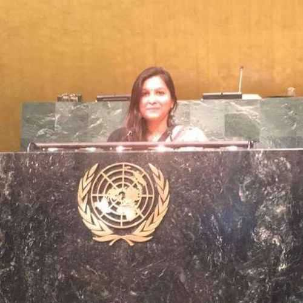

Joshika Saraf Secretary General

Joshika Saraf is a law graduate, currently working as a law researcher at the Hon'ble High Court of Delhi. She has previously worked with organisations like the United Nations Development Programme (UNDP- India), Indian Ministry of Home Affairs etc.